Rajahmundry Tourism Gallery
A look at Papikondalu, the Godavari and the trips we run every week.
 Papikondalu Hills
Papikondalu Hills
 Godavari boat trip
Godavari boat trip
 Riverside Temple
Riverside Temple
 Temple Heritage
Temple Heritage
 Polavaram Project
Polavaram Project
 Godavari at Sunset
Godavari at Sunset
 Koruturu
Koruturu
 Papikondalu Scenic View
Papikondalu Scenic View
 Godavari Valley
Godavari Valley
 Temple Visit
Temple Visit
 Bus Travel
Bus Travel
 Our Fleet
Our Fleet
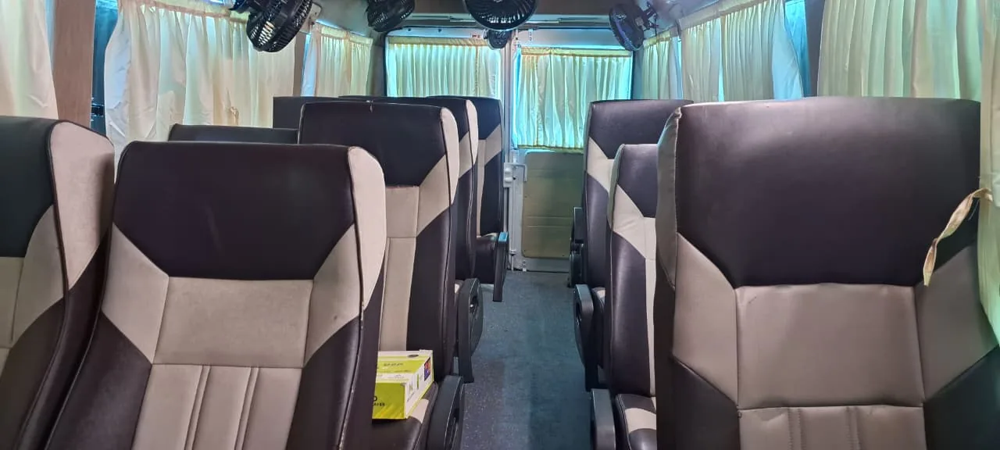
Tour Experience 01 Tour Experience 02
Tour Experience 02
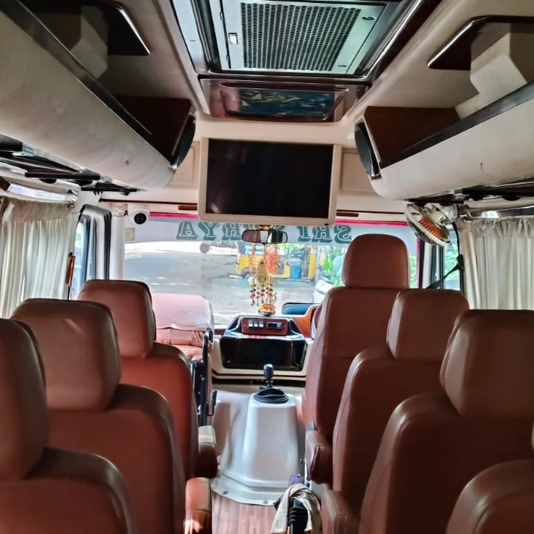
Tour Experience 03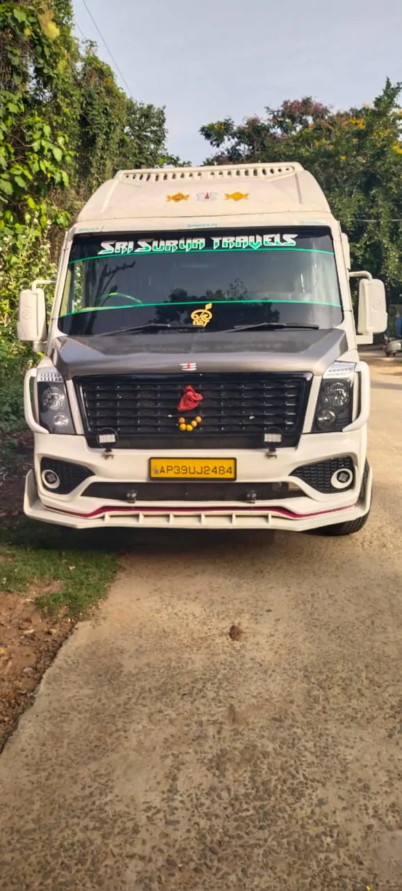
Tour Experience 04 Tour Experience 05
Tour Experience 05
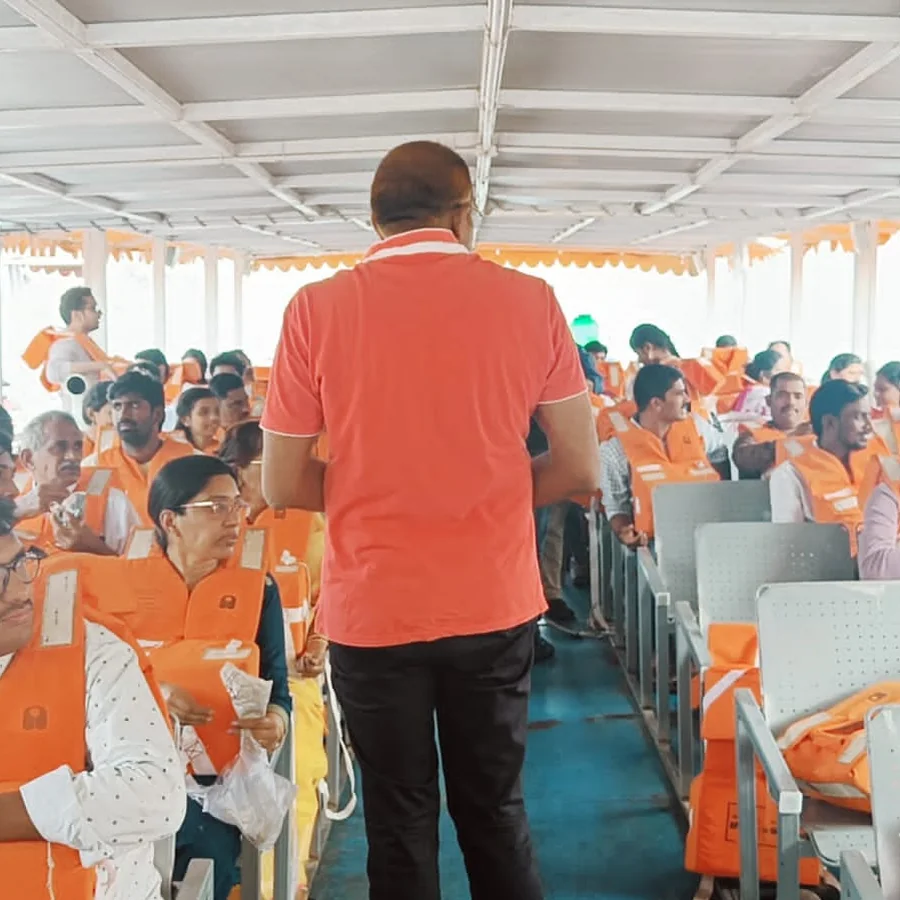
Tour Experience 06 Tour Experience 07
Tour Experience 07
 Tour Experience 08
Tour Experience 08
 Tour Experience 09
Tour Experience 09
 Tour Experience 10
Tour Experience 10
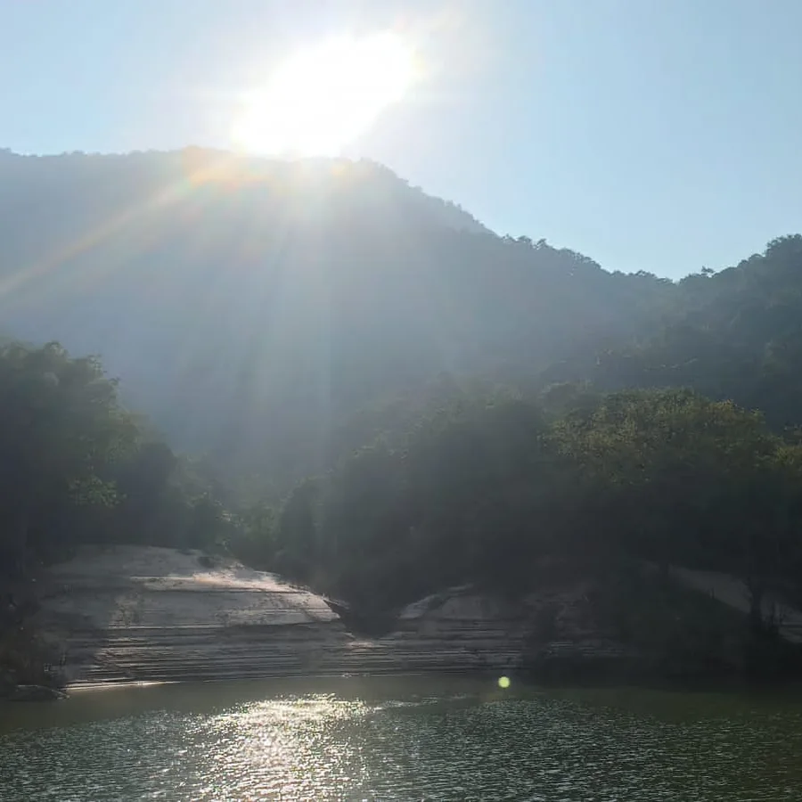
Tour Experience 11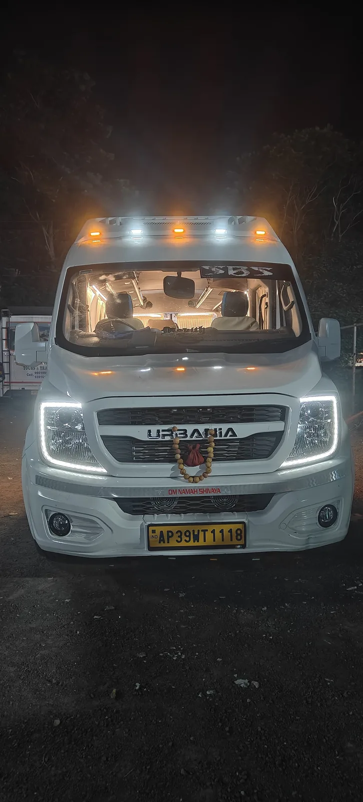
Tour Experience 12 Tour Experience 13
Tour Experience 13
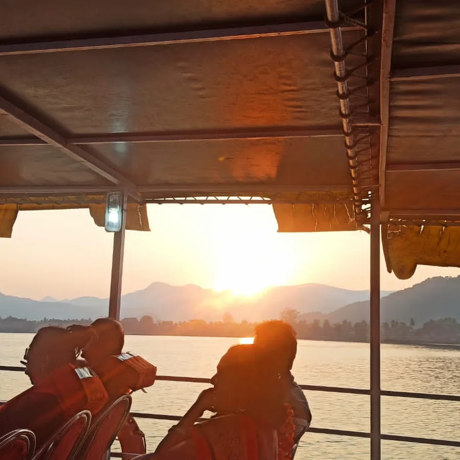
Tour Experience 14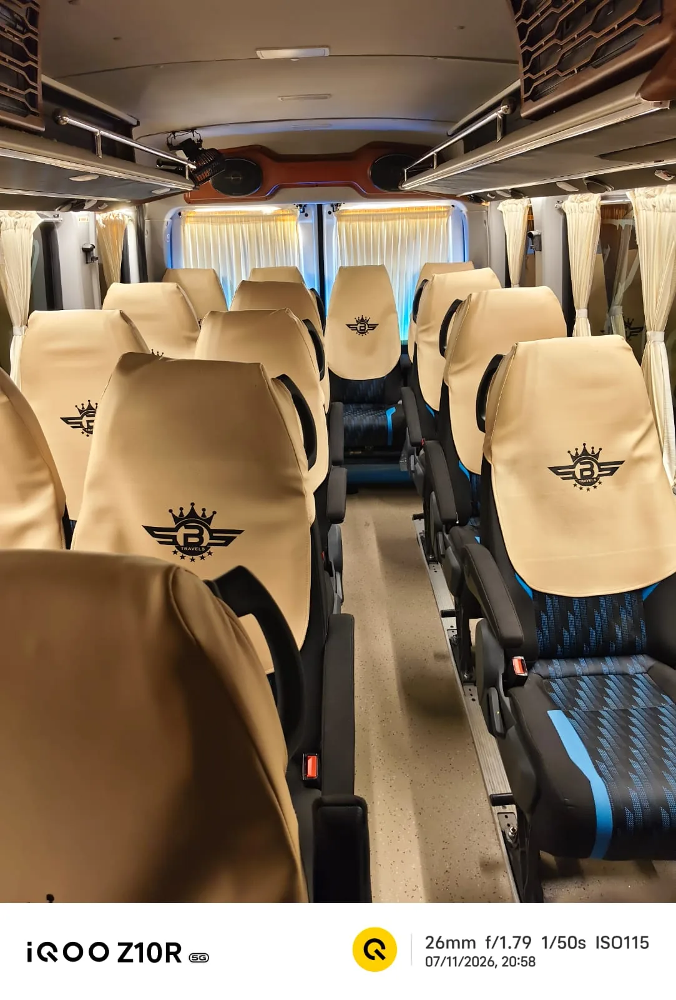
Tour Experience 15 Tour Experience 16
Tour Experience 16
 Tour Experience 17
Tour Experience 17
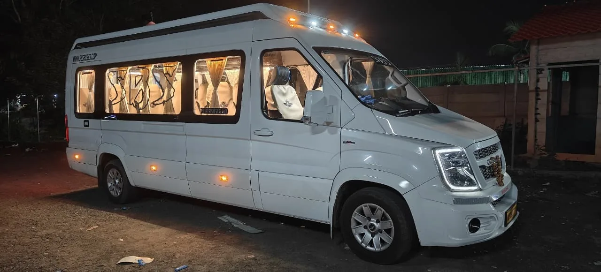
Tour Experience 18 Tour Experience 19
Tour Experience 19
 Tour Experience 20
Tour Experience 20
 Tour Experience 21
Tour Experience 21
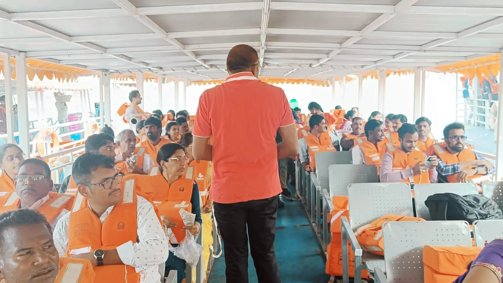
Tour Experience 22 Tour Experience 23
Tour Experience 23
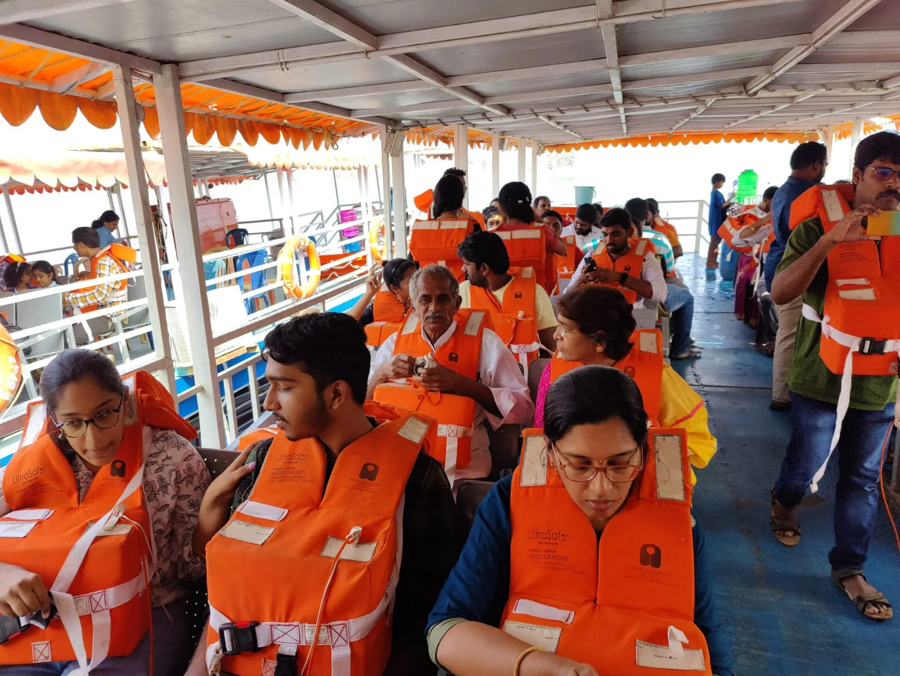
Tour Experience 24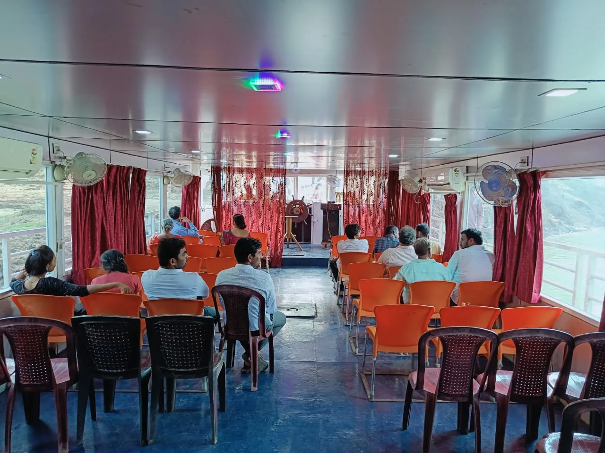
Tour Experience 25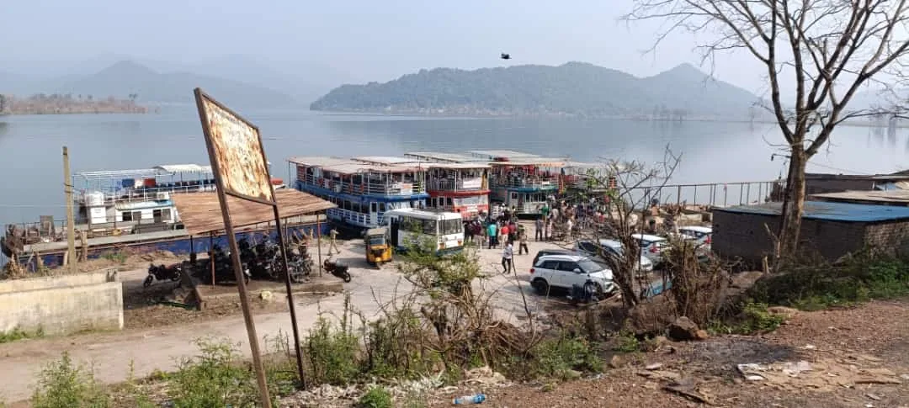
Tour Experience 26 Tour Experience 27
Tour Experience 27
 Tour Experience 28
Tour Experience 28
 Tour Experience 29
Tour Experience 29
 Tour Experience 30
Tour Experience 30
 Tour Experience 31
Tour Experience 31
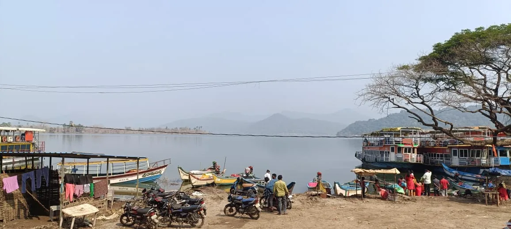
Tour Experience 32 Tour Experience 33
Tour Experience 33
Papikondalu & Maredumilli Tourism in Pictures
See colourful moments related to Papikondalu & Maredumilli Tourism, curated for Rajahmundry travellers.


Frequently Asked Questions
Common questions about this page and the related Rajahmundry travel service.
The gallery includes photos related to Rajahmundry travel, Godavari boat trips, cars, tours, nature destinations and other travel services.
The gallery is intended to visually represent the travel experiences, vehicles, destinations and services discussed on the website.
Yes. Contact the team with the image or destination you are interested in and ask for the current package or travel details.
Yes. Godavari boat-trip arrangements are available as part of selected Papikondalu and related travel packages, subject to availability.
Use the relevant service link or contact Rajahmundry Tourism on +91 72079 02958 with your preferred date and group size.